Paxolab — aynı brief, altı ruh hali
Brief'teki renk sabit; değişen tek şey ruh hali. Soru: altısı da ayrı birer tasarım kararı gibi mi duruyor, yoksa aynı tasarımın boyası mı değişmiş?
Verda · Aloe Mistbrief rengi: yeşil · krem
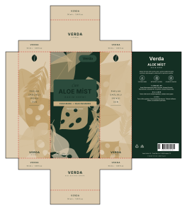
luxury
dark-luxe · botanical-card
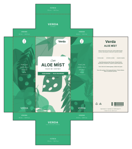
minimal
clean-clinical · diagonal-tech
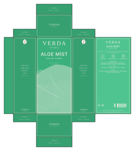
modern
tech-dark · ink-wash
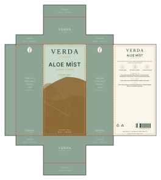
eco
natural-warm · ink-wash
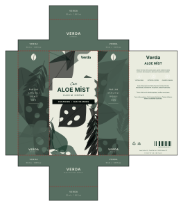
classic
light-luxe · ink-wash
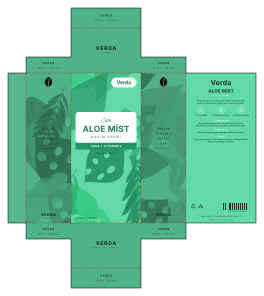
playful
vivid-mono · marble-frame
Elite Brew · Mochabrief rengi: mermer · altın
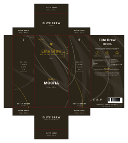
luxury
dark-luxe · marble-frame
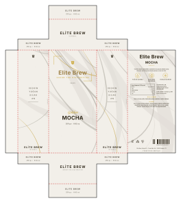
minimal
clean-clinical · dark-landscape
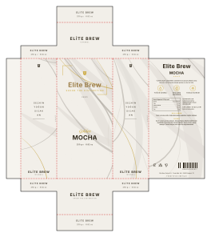
modern
clean-clinical · wave-panel
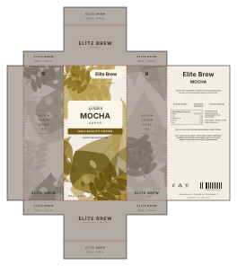
eco
natural-warm · botanical-card
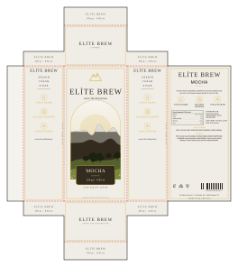
classic
light-luxe · landscape-window
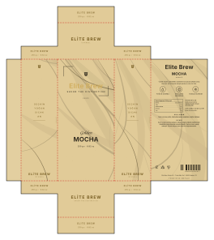
playful
vivid-mono · wave-panel
Nox · Pulse Budsbrief rengi: antrasit · turuncu
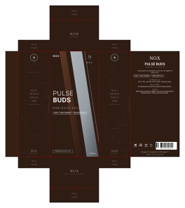
luxury
dark-luxe · diagonal-tech
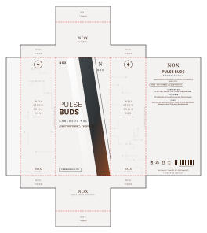
minimal
clean-clinical · wave-panel
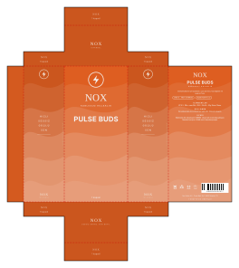
modern
tech-dark · wave-panel
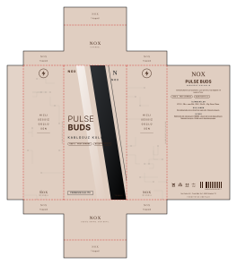
eco
natural-warm · line-scene
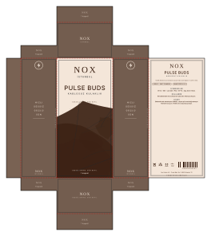
classic
light-luxe · ink-wash
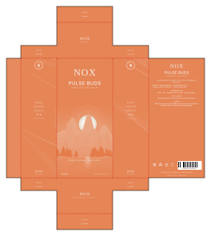
playful
vivid-mono · dark-landscape